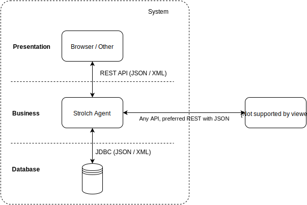
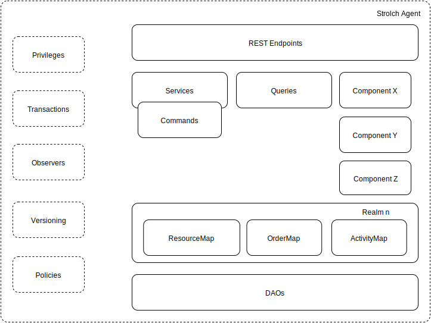

Birds View
A Strolch agent's architecture can be seen as a simple three-tier architecture. The presentation layer is mostly a web frontend, where the communication with the agent is done via REST API calls.
The agent itself implements the business logic using Services, Commands, Queries etc.
The agent can communicate with other 3rd systems using any API, where it is preferred to use JSON over REST.
The agent can use a standard RDBMS as a storage system, where currently DAOs have been implemented only for PostgreSQL. Should it be required, then any JDBC cabable RDBMS can be used, as no PostgreSQL specific SQL commands are used.
The following diagram helps visualize this:
Squirrel View
The following diagram shows a more detailed view of the architecture of a Strolch Agent.
A Strolch agent consists of the following main parts:
- REST Endpoints → expose an API to access the Strolch agent outside of the Java VM
- Services and Commands → implements business logic
- Searches → implements specific queries against the Strolch model
- Components → Implements additional logic, which is best implement as a component. E.g. active components which have threads, etc.
- Realms → implements multi-tenant capabilities
In addition to the main parts, Strolch contains inherit capabilities, which gives Strolch unique features when compared to other Java Frameworks:
- Policies → Policies allow injecting different algorithms. All root elements can store Policy definitions, so that a service can delegate to a Policy and thus behave differently, depending on the element being accessed.
- Transactions → Transactions handle locking/unlocking of objects, updating the model and are the central API for the developer.
- Privileges → Strolch is user agnostic and any action, i.e. Service, Query, etc. is authorized against the authenticated user.
- Observers → modifications to the model are propagated to listeners using the observer pattern.
- Audits → Every access (read, modify) of the model are audited
- Versioning → modifications to objects are versioned and thus can be rolled back at a later time.